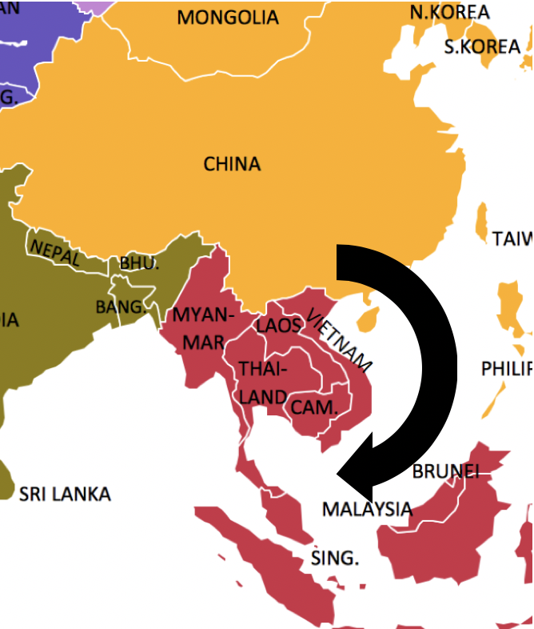

Exploring Peranakan Culture through Data Visualization
Peranakan Culture
Peranakans are an ethnic group that descended from Chinese settlers from the southern provinces who came to the Malay archipelago including British Malaya (now Malaysia and Singapore) and Dutch East Indies between the 15th and 17th centuries.
History of the Peranakan Culture
Timeline: 15th Century to Present

15th Century
Traders from China came to Singapore, Malaysia and Indonesia (Melaka, Penang, Singapore, and Cirebon)
Notable Peranakans and their Contributions
Present-Day Demographic Statistics
Malaysia
Singapore
Languages Spoken and Main Religions within the Peranakan Ethnicity